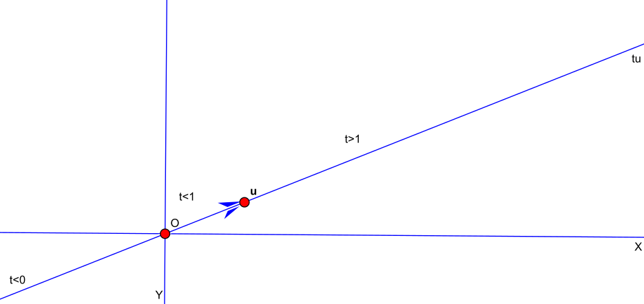

Dado un vector u (velocidad), podemos considerar la línea recta o movimiento rectilíneo uniforme de una partícula en origen O con velocidad u (distinta de cero).
Este conjunto de puntos se obtiene al escalar el vector u con todas las escalas posibles, denotamos:
Lu=⟨u⟩={tu∣t∈R}

Representación paramétrica
Si la partícula que describe la línea recta no está situada en el orígen sino en el punto P, empujamos la línea simplemente sumando P.
Tenemos así para u,P∈Rn(R2)
Definición La línea recta L en dirección del vector u que pasa por el punto P está dada por
L={P+tu∣t∈R}⊂Rn
Proposición La representación paramétrica de L dada por la función φ(t)=P+tu
φ:Rt⟶⟼L⊂RnP+tu
es una biyección.
Demostración
Suprayectiva por definición de L
Inyectiva φ(t)=P+tu=P+su=φ(s)
como u=0 t=s□
Podemos ahora comenzar a revisar los postulados de Euclides, en particular el primero y el tercero.
Proposición. Dados dos puntos P y Q existe una recta que pasa por ellos.
Demostración. Considérese u=Q−P y la recta L con dirección u que pasa por P, satisface φ(0)=P y φ(1)=Q. Es decir el segmento está dado por